Computational
AstrophysicistBuilding AI-Powered Toolkits
Explore my workPublications 6
- Data Scientist
- Machine Learning Engineer
- AI Researcher
My research turns astronomical spectra into constraints on the physics of complex astrophysical systems. At Cambridge, I work with Nikku Madhusudhan’s Hycean group to disentangle planetary signatures from the changing spectra of their host stars, bringing together stellar physics, machine learning and Bayesian inference for JWST observations.
Previously, I developed SPECULATE during my doctoral research at Southampton: an open-source framework for emulating accretion-disc spectra and probing the physics of their winds. My work has also taken me beyond astronomy, into numerical weather prediction at IBM Research and fusion-plasma diagnostics at UKAEA.
Publications 6
- Optical outburst evolution of the transient black hole X-ray binary Swift J1727.8−1613: disc response to jet ejections and late-outburst emergence of powerful disc winds
- Radiation-ionization hydrodynamic simulations of AGN line-driven winds lead to transient shielding and BAL/UFO signatures
- The critical role of clumping in line-driven disc winds
- A diagnostic kit for optical emission lines shaped by accretion disc winds
- Monte Carlo radiation hydrodynamic simulations of line-driven disc winds: relaxing the isothermal approximation
- SIROCCO: a publicly available Monte Carlo ionization and radiative transfer code for astrophysical outflows
Places
From observatory nights to conference stages.

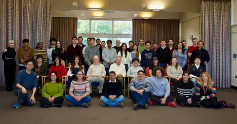
Southampton, UK
Southampton colleagues during my doctoral research.

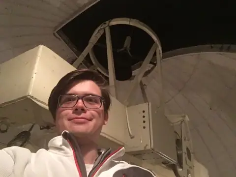
Tenerife, Spain
Observatory work with the IAC and University of La Laguna.

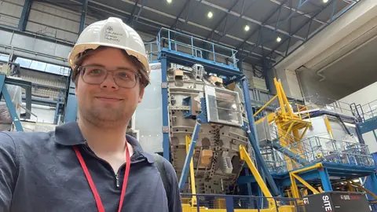
Culham, UK
Plasma-pressure surrogate modelling at UKAEA.

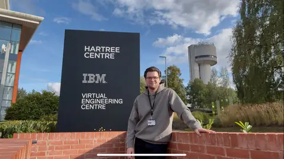
Daresbury, UK
Machine learning and optimisation at IBM Research’s Hartree Centre.

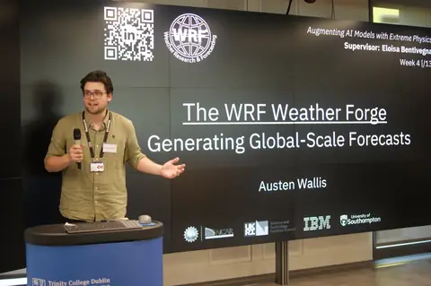
Trinity College Dublin
Presenting WRF Weather Forge and global forecasting work.

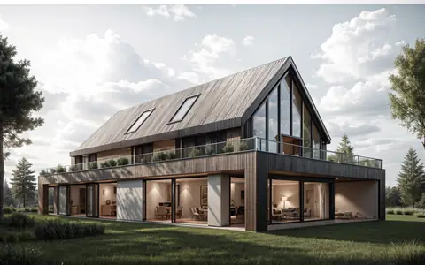
Winchester, UK
Planning and development work with Wallco, alongside my PhD.

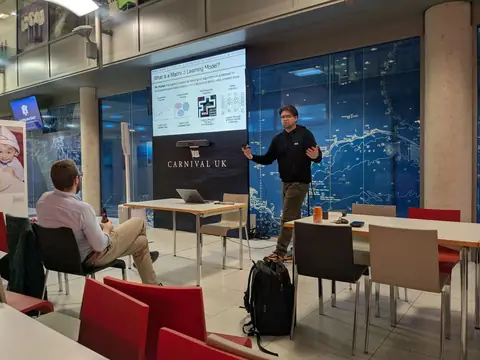
PyData Southampton
Machine learning and scientific computing with the local PyData community.

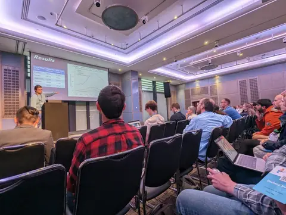
PyData London 2024
A lightning talk at PyData London 2024.

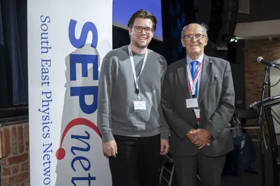
GRADnet Award
Best PhD Poster at the SEPnet Employers Exhibition, 2024.

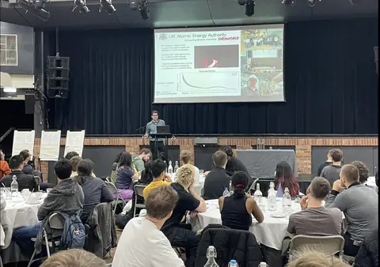
GRADnet 2024
The graduate-research community at GRADnet 2024.

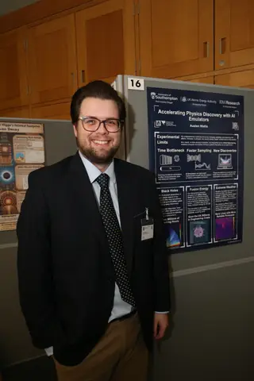
STEM for Britain 2026
Presenting research at the UK Parliament.

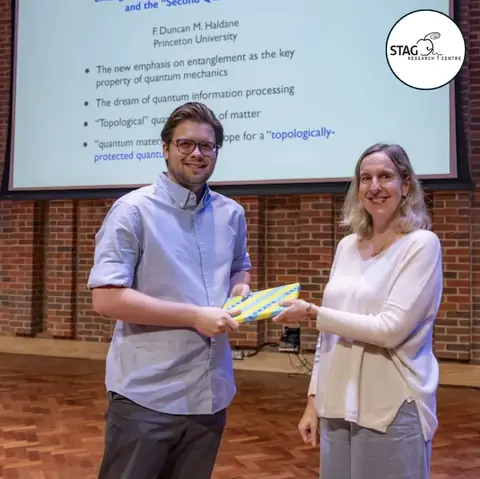
STAG Research Prize
Best Publication in Astrophysics, 2025.

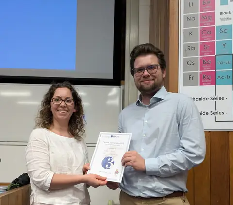
FEPS 3MT Runner-Up
FEPS 3 Minute Thesis runner-up: “Accelerating Astronomical Discoveries with AI Emulators”.
Curriculum vitae
Download CV PDFResearch & industry
Research Assistant in Exoplanetary Remote Sensing and Data Science
Institute of Astronomy, University of Cambridge
Modelling M-dwarf spectra and stellar variability to support exoplanet-atmosphere inference with JWST observations.
Postgraduate Researcher
University of Southampton
Developing SPECULATE, simulation emulators and spectral diagnostics for accretion outflows as part of my doctoral research.
AI Research Scientist
IBM Research, Daresbury
Non-gradient optimisation in PDE solution spaces and synthetic weather data for the IBM–NASA Prithvi effort.
Machine Learning Research Scientist
UK Atomic Energy Authority, Culham
A deep-ensemble surrogate for plasma-pressure prediction, combining fast predictions with uncertainty estimates.
Student Researcher
Instituto de Astrofísica de Canarias & University of La Laguna
Studying Jupiter's mass and rotational flattening, with observatory experience on the IAC-80, TCS and Mons telescopes.
Education
PhD candidate in Astrophysics
University of Southampton
Thesis: Emulator-based inference of imperfect and complex astrophysical models: Reducing Millions of Computational Hours to Minutes.
MPhys in Astrophysics with a Year of Research
University of Southampton · first class honours
Final-year research on calibrating a cosmological standard candle using active galactic nuclei.
Teaching & talks
- PHYS2022: scientific Python and data analysis.
- PHYS2011: astronomy design and observation.
- Southampton Astrodome outreach.
- Talks at RAS ML/AI Astronomy, PyData Southampton, PyData London and Trinity College Dublin.
Selected awards
- 2026 FEPS 3 Minute Thesis runner-up.
- 2025 STAG Research Prize for Best Publication in Astrophysics.
- 2024 Best PhD Poster, SEPnet Employers Exhibition.
- 2024 Second place, DISCnet LIV.INNO ML Kaggle competition.
Technical toolkit
- Modelling
- Emulators, Bayesian inference, Gaussian processes, ensembles, MCMC and time series.
- Code
- Python, C and Julia; PyTorch, TensorFlow, JAX, NumPy and SciPy.
- Data
- Pandas, Polars, Dask, Xarray, Matplotlib and Vega-Altair.
- Workflow
- Linux, Git, SLURM, LSF, Jupyter, Marimo and Streamlit.